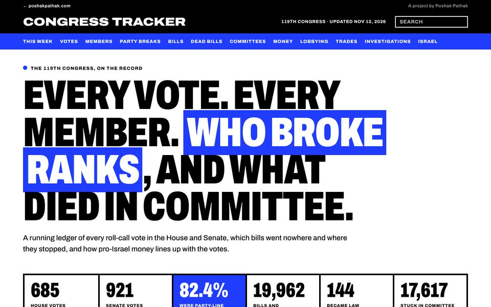

Congress Tracker: every vote in Congress, on the record

The big picture
Almost everything Congress does is public. Every roll-call vote, every bill's history, every campaign contribution, every lobbying report and every stock trade a House member reports is published somewhere. The catch is that "somewhere" means a dozen different government sites, each with its own format.
Congress Tracker pulls those records into one place and lines them up: how each member voted, when they broke from their party, which bills never left committee, and who was spending money around them.
Counts for the 119th Congress as of November 12, 2026.
How it works
A Python pipeline runs every night on GitHub Actions. It loads a profile for every member, downloads each new roll-call vote from the House Clerk and the Senate, and reads the status of every bill from the government's bulk data. The results are written to the repository as JSON files. Every push publishes a fresh copy of the site, which is plain HTML, CSS and JavaScript with no framework.
Separate jobs handle the heavier sources: Federal Election Commission files weekly (they are several gigabytes), and lobbying reports and stock trade filings daily.
Who breaks ranks
For every vote, the party position is the side most of that party's members took. A break is a yea or nay against your own party's position. Missing a vote or voting present never counts as a break.
Loyalty alone is misleading, because many votes are close to unanimous. The more telling number is party unity: loyalty counted only on votes where most Democrats opposed most Republicans.
Where bills go to die
Of the 19,962 bills and resolutions introduced in this Congress, 17,617 are still sitting in committee. The committee pages show which bills had enough cosponsors to pass and never got a vote, and which organizations lobbied on the bills that stalled there.
Money, lobbying and trades
The money pages read FEC bulk data for the last three election cycles. The lobbying pages read quarterly reports filed under the Lobbying Disclosure Act, and the trades page reads the periodic transaction reports House members file.
Each of these comes with caveats, and the site states them next to the numbers. A lobbying report lists one amount for everything an organization worked on that quarter, so the amount next to a bill is not money spent on that bill. Reports filed on paper are scanned images, so their trades are listed without details. And money lining up with votes is correlation only: groups give to members who already agree with them.
Built with
| Part | Tools |
|---|---|
| Pipeline | Python, GitHub Actions on a nightly schedule |
| Sources | House Clerk, Senate.gov, govinfo bulk data, FEC, Lobbying Disclosure Act reports, House financial disclosures |
| Site | Plain HTML, CSS and JavaScript |
| Data platform | Spark and Delta Lake, dbt with Postgres, Dagster, pgvector search |
| Hosting | Cloudflare Pages |
What is next
Senate stock trades are not read yet, only the House's. That is the next source to add.